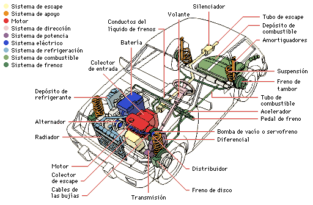
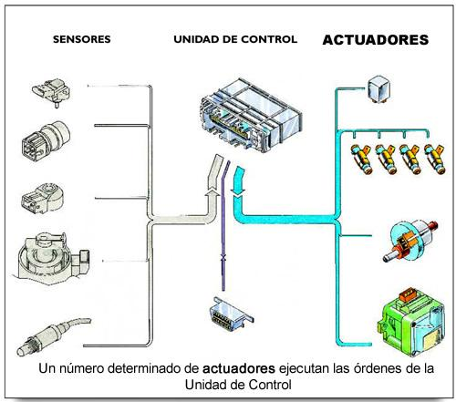

El sistema de control electrónico es el encargado de gestionar todas las funciones eléctricas del automóvil y al igual que el módulo de control del motor, también suele ser conocido como centralita. No obstante, este sistema de gestión recibe un nombre distinto cuyas siglas son UCE (Unidad de Control Eléctrico).
Así pues, la UCE recoge la información de los sensores electrónicos que están instalados en el automóvil para determinar el tipo funcionamiento que deberá aplicarse a otros elementos mediante la conexión o la desconexión de los actuadores. De esta manera, se ponen en marcha cada una de las piezas que requieren de corriente eléctrica para cumplir su cometido.

Puesto que se trata de componentes microelectrónicos, el número de averías posibles dependerá de la cantidad de elementos adicionales (sensores y actuadores) de los que disponga el sistema, además de la propia UCE. Para identificar el origen de una avería en el sistema electrónico de un coche será imprescindible contar con un equipo de diagnosis, que conecte directamente con la unidad.

Empecemos por descifrar las siglas OBD. Estas provienen del inglés On-Board Diagnostics (Diagnósticos a bordo) y hablan de una medida estándar que se tomó a partir que las marcas de automóviles empezaron a incorporar cada vez más componentes electrónicos en sus autos que van desde la gestión del encendido e inyección de gasolina hasta más complejos como los sensores de oxígeno y de emisiones por el escape.
El primer esfuerzo se realizó a finales de los años 80 y se llamó OBD-I. Su principal función fue el de estandarizar el conector para poder leer las cifras de emisiones de cada auto. Como habrás adivinado, no todas las marcas lo incorporaron y se decidió mejorar la tecnología y hacerla obligatoria para todos los autos nuevos que se vendieran a partir del 1° de Enero de 1996 en Estados Unidos, así es como nace el OBD-II.
Por regulación, el puerto OBD-II tiene que estar 91cm del conductor dentro de la cabina y se debe de poder manipular sin alguna herramienta especial, es decir, nunca lo encontrarás con alguna tapa asegurada con tornillos o tuercas.
Normalmente se encuentra debajo del volante en la zona del tablero o detrás de algún cenicero y cuenta con espacio para 16 pines –aunque no necesariamente debe tenerlos todos, depende más bien de la marca y el “lenguaje” que utilice como mencionamos anteriormente.
Además de poder verificar las emisiones de tu auto y recopilar códigos de errores, el OBD-II tiene interesantes funciones que se pueden aprovechar pues está directamente conectado a la unidad electrónica central (ECU), conocida informalmente como “computadora del auto”.
Gracias a que el OBD-II se ha convertido en un componente universal, algunos desarrolladores han creado lectores compatibles con esta tecnología con la que puedes verificar todo tipo de errores y de información desde tu teléfono celular.